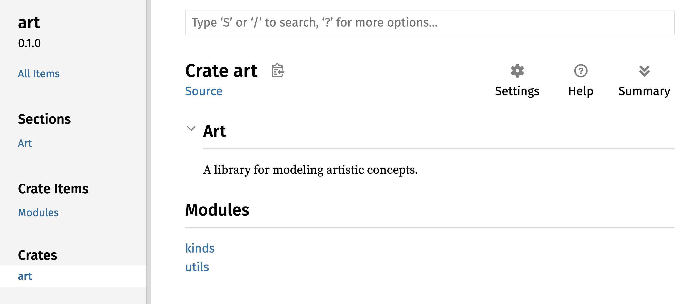
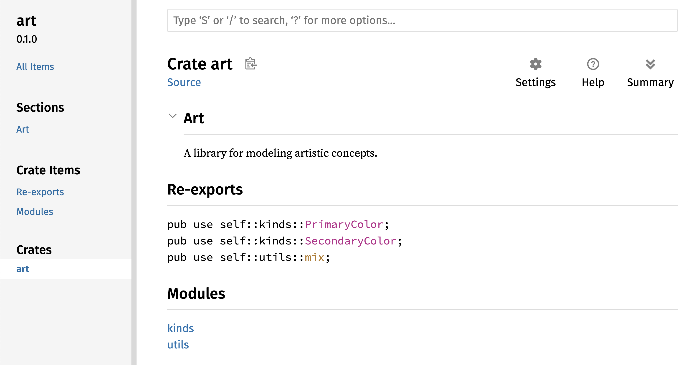

انتشار یک Crate در Crates.io
ما از بستههایی از crates.io بهعنوان وابستگیهای پروژهٔ خود استفاده کردهایم، اما میتوانید با انتشار بستههای خودتان، کد خود را با دیگران نیز به اشتراک بگذارید. رجیستری crateها در crates.io کد منبع بستههای شما را توزیع میکند، بنابراین عمدتاً میزبان کدهای متنباز است.
Rust و Cargo ویژگیهایی دارند که باعث میشود پکیج منتشرشده شما برای دیگران راحتتر پیدا شده و استفاده شود. ما ابتدا درباره برخی از این ویژگیها صحبت میکنیم و سپس توضیح میدهیم چگونه یک پکیج منتشر کنیم.
ایجاد نظرات مستندات مفید
مستندسازی دقیق پکیجهای شما به دیگر کاربران کمک میکند بدانند چگونه و چه زمانی از آنها استفاده کنند، بنابراین ارزش دارد که وقت خود را برای نوشتن مستندات صرف کنید. در فصل 3، نحوه اضافه کردن نظرات به کد Rust با استفاده از دو اسلش // را بررسی کردیم. Rust همچنین نوع خاصی از نظرات برای مستندات دارد که به نام نظرات مستندات شناخته میشود و مستندات HTML تولید میکند. این مستندات HTML محتوای نظرات مستندات را برای آیتمهای عمومی API نمایش میدهد که برای برنامهنویسانی که به دنبال دانستن چگونگی استفاده از crate شما هستند، طراحی شده است و نه چگونگی پیادهسازی crate شما.
نظرات مستندات به جای دو اسلش از سه اسلش /// استفاده میکنند و از نشانهگذاری Markdown برای قالببندی متن پشتیبانی میکنند. نظرات مستندات را درست قبل از آیتمی که قرار است مستندسازی شود قرار دهید. لیستینگ 14-1 نظرات مستندات برای یک تابع add_one در یک crate به نام my_crate را نشان میدهد.
/// Adds one to the number given.
///
/// # Examples
///
/// ```
/// let arg = 5;
/// let answer = my_crate::add_one(arg);
///
/// assert_eq!(6, answer);
/// ```
pub fn add_one(x: i32) -> i32 {
x + 1
}اینجا، ما توضیحی درباره عملکرد تابع add_one میدهیم، بخشی با عنوان Examples شروع میکنیم، و سپس کدی که نشان میدهد چگونه از تابع add_one استفاده کنیم ارائه میدهیم. میتوانیم مستندات HTML را از این نظر مستند با اجرای دستور cargo doc تولید کنیم. این دستور ابزار rustdoc که با Rust توزیع شده را اجرا میکند و مستندات HTML تولیدشده را در دایرکتوری target/doc قرار میدهد.
برای راحتی، اجرای دستور cargo doc --open مستندات HTML را برای crate فعلی شما (و همچنین مستندات همه وابستگیهای crate شما) میسازد و نتیجه را در مرورگر وب باز میکند. به تابع add_one بروید و خواهید دید که چگونه متن موجود در نظرات مستندات نمایش داده میشود، همانطور که در شکل 14-1 نشان داده شده است:

شکل 14-1: مستندات HTML برای تابع add_one
بخشهای متداول مورد استفاده
ما در لیستینگ 14-1 از عنوان Markdown # Examples برای ایجاد یک بخش در HTML با عنوان “Examples” استفاده کردیم. در اینجا برخی دیگر از بخشهایی که نویسندگان crate معمولاً در مستندات خود استفاده میکنند آورده شده است:
- Panics: سناریوهایی که در آن ممکن است تابع مستند شده باعث ایجاد panic شود. فراخوانان تابع که نمیخواهند برنامههایشان panic کنند باید مطمئن شوند که تابع را در این شرایط فراخوانی نمیکنند.
- Errors: اگر تابع یک مقدار
Resultبازگرداند، توضیح انواع خطاهایی که ممکن است رخ دهد و شرایطی که ممکن است این خطاها را ایجاد کند، برای فراخوانان مفید است تا بتوانند کدهایی برای مدیریت انواع مختلف خطاها بنویسند. - Safety: اگر تابع
unsafeبرای فراخوانی باشد (ما عدم ایمنی را در فصل 20 بررسی خواهیم کرد)، باید بخشی توضیح دهد که چرا تابع ناامن است و اصولی را که تابع از فراخوانان انتظار دارد رعایت کنند پوشش دهد.
بیشتر نظرات مستندات به همه این بخشها نیاز ندارند، اما این یک چکلیست خوب برای یادآوری جنبههایی از کد شما است که کاربران علاقهمند به دانستن آن هستند.
نظرات مستندات به عنوان تست
اضافه کردن بلوکهای کد مثال به نظرات مستندات شما میتواند به نمایش نحوه استفاده از کتابخانه شما کمک کند، و انجام این کار یک مزیت اضافی دارد: اجرای دستور cargo test، مثالهای کد در مستندات شما را به عنوان تست اجرا خواهد کرد! هیچ چیزی بهتر از مستندات با مثال نیست. اما هیچ چیزی بدتر از مثالهایی نیست که کار نمیکنند زیرا کد از زمان نوشته شدن مستندات تغییر کرده است. اگر cargo test را با مستندات تابع add_one از لیستینگ 14-1 اجرا کنیم، بخشی در نتایج تست مانند زیر خواهیم دید:
Doc-tests my_crate
running 1 test
test src/lib.rs - add_one (line 5) ... ok
test result: ok. 1 passed; 0 failed; 0 ignored; 0 measured; 0 filtered out; finished in 0.27s
اکنون، اگر تابع یا مثال را تغییر دهیم به طوری که assert_eq! در مثال باعث panic شود و دوباره cargo test را اجرا کنیم، خواهیم دید که تستهای مستندات تشخیص میدهند که مثال و کد با یکدیگر همگام نیستند!
مستندسازی آیتمهای شامل شده
سبک نظر مستند //! مستندات را به آیتمی که نظرات را شامل میشود اضافه میکند، به جای آیتمهایی که بعد از نظرات قرار دارند. ما معمولاً از این نظرات مستند در فایل اصلی crate (src/lib.rs بر اساس قرارداد) یا در داخل یک ماژول برای مستندسازی کل crate یا ماژول استفاده میکنیم.
برای مثال، برای اضافه کردن مستنداتی که هدف crate my_crate را که شامل تابع add_one است توضیح میدهد، نظرات مستندی که با //! شروع میشوند را به ابتدای فایل src/lib.rs اضافه میکنیم، همانطور که در لیستینگ 14-2 نشان داده شده است:
//! # My Crate
//!
//! `my_crate` is a collection of utilities to make performing certain
//! calculations more convenient.
/// Adds one to the number given.
// --snip--
///
/// # Examples
///
/// ```
/// let arg = 5;
/// let answer = my_crate::add_one(arg);
///
/// assert_eq!(6, answer);
/// ```
pub fn add_one(x: i32) -> i32 {
x + 1
}توجه داشته باشید که هیچ کدی بعد از آخرین خطی که با //! شروع میشود وجود ندارد. چون ما نظرات را با //! شروع کردهایم به جای ///، ما در حال مستندسازی آیتمی هستیم که این نظر را شامل میشود به جای آیتمی که بعد از این نظر قرار دارد. در این مورد، آن آیتم فایل src/lib.rs است که ریشه crate است. این نظرات کل crate را توضیح میدهند.
وقتی cargo doc --open را اجرا میکنیم، این نظرات در صفحه اول مستندات crate my_crate بالای لیست آیتمهای عمومی در crate نمایش داده میشوند، همانطور که در شکل 14-2 نشان داده شده است:
توضیحات مستندات درون آیتمها بهویژه برای توصیف crateها و ماژولها مفیدند. از آنها برای توضیح هدف کلی ظرف (container) استفاده کنید تا به کاربرانتان در درک ساختار crate کمک کنید.

شکل 14-2: مستندات تولید شده برای my_crate، شامل توضیحات در مورد کل crate
صادر کردن یک API عمومی راحتاستفاده
ساختار API عمومی شما یک موضوع مهم هنگام انتشار یک crate است. افرادی که از crate شما استفاده میکنند، کمتر از شما با ساختار آن آشنا هستند و ممکن است در یافتن قسمتهایی که میخواهند استفاده کنند، اگر crate شما دارای یک سلسلهمراتب ماژول بزرگ باشد، دچار مشکل شوند.
در فصل 7، نحوه عمومی کردن آیتمها با استفاده از کلمه کلیدی pub و آوردن آیتمها به یک scope با استفاده از کلمه کلیدی use را پوشش دادیم. با این حال، ساختاری که هنگام توسعه یک crate برای شما منطقی به نظر میرسد ممکن است برای کاربران شما چندان مناسب نباشد. ممکن است بخواهید ساختارهای خود را در یک سلسلهمراتب با چندین سطح سازماندهی کنید، اما سپس افرادی که میخواهند از یک نوع تعریفشده عمیق در سلسلهمراتب استفاده کنند ممکن است در پیدا کردن آن نوع دچار مشکل شوند. همچنین ممکن است مجبور شوند به جای use my_crate::UsefulType;، چیزی مانند use my_crate::some_module::another_module::UsefulType; بنویسند که ناخوشایند است.
خبر خوب این است که اگر ساختار برای دیگران راحت نیست، نیازی نیست سازماندهی داخلی خود را دوباره بچینید: به جای آن میتوانید آیتمها را با استفاده از pub use مجدداً صادر کنید تا یک ساختار عمومی متفاوت از ساختار خصوصی خود ایجاد کنید. صادرات مجدد یک آیتم عمومی در یک مکان را میگیرد و آن را در یک مکان دیگر عمومی میکند، گویی که در مکان دیگر تعریف شده است.
برای مثال، فرض کنید ما یک کتابخانه به نام art برای مدلسازی مفاهیم هنری ایجاد کردهایم. در این کتابخانه دو ماژول وجود دارند: یک ماژول kinds که شامل دو enum به نامهای PrimaryColor و SecondaryColor است و یک ماژول utils که شامل یک تابع به نام mix است، همانطور که در لیستینگ 14-3 نشان داده شده است:
//! # Art
//!
//! A library for modeling artistic concepts.
pub mod kinds {
/// The primary colors according to the RYB color model.
pub enum PrimaryColor {
Red,
Yellow,
Blue,
}
/// The secondary colors according to the RYB color model.
pub enum SecondaryColor {
Orange,
Green,
Purple,
}
}
pub mod utils {
use crate::kinds::*;
/// Combines two primary colors in equal amounts to create
/// a secondary color.
pub fn mix(c1: PrimaryColor, c2: PrimaryColor) -> SecondaryColor {
// --snip--
unimplemented!();
}
}شکل 14-3 نشان میدهد که صفحه اول مستندات این crate که توسط cargo doc تولید شده است چگونه به نظر میرسد:

شکل 14-3: صفحه اول مستندات crate art که ماژولهای kinds و utils را لیست میکند
توجه کنید که انواع PrimaryColor و SecondaryColor در صفحه اول لیست نشدهاند، و تابع mix نیز لیست نشده است. برای دیدن آنها باید روی kinds و utils کلیک کنیم.
یک crate دیگر که به این کتابخانه وابسته است نیاز دارد که بیانیههای use مشخص کنند که آیتمها را از art به scope میآورند، و ساختار ماژول تعریفشده کنونی را بیان کنند. لیستینگ 14-4 یک مثال از crateای که آیتمهای PrimaryColor و mix را از crate art استفاده میکند نشان میدهد:
use art::kinds::PrimaryColor;
use art::utils::mix;
fn main() {
let red = PrimaryColor::Red;
let yellow = PrimaryColor::Yellow;
mix(red, yellow);
}نویسندهٔ کد لیستینگ ۱۴-۴ که از crate art استفاده میکند، مجبور بود بفهمد که PrimaryColor در ماژول kinds و mix در ماژول utils قرار دارد. ساختار ماژولهای crate art برای توسعهدهندگانی که روی خود crate art کار میکنند مرتبطتر است تا برای کسانی که از آن استفاده میکنند. ساختار داخلی هیچ اطلاعات مفیدی برای کسی که میکوشد بفهمد چگونه از crate art استفاده کند ندارد، بلکه باعث سردرگمی میشود، چون توسعهدهندگانی که از آن استفاده میکنند باید بفهمند کجا را جستجو کنند و باید نام ماژولها را در دستورهای use مشخص کنند.
برای حذف سازماندهی داخلی از API عمومی، میتوانیم کد crate art را در لیستینگ 14-3 تغییر دهیم تا بیانیههای pub use را برای صادرات مجدد آیتمها در سطح بالا اضافه کنیم، همانطور که در لیستینگ 14-5 نشان داده شده است:
//! # Art
//!
//! A library for modeling artistic concepts.
pub use self::kinds::PrimaryColor;
pub use self::kinds::SecondaryColor;
pub use self::utils::mix;
pub mod kinds {
// --snip--
/// The primary colors according to the RYB color model.
pub enum PrimaryColor {
Red,
Yellow,
Blue,
}
/// The secondary colors according to the RYB color model.
pub enum SecondaryColor {
Orange,
Green,
Purple,
}
}
pub mod utils {
// --snip--
use crate::kinds::*;
/// Combines two primary colors in equal amounts to create
/// a secondary color.
pub fn mix(c1: PrimaryColor, c2: PrimaryColor) -> SecondaryColor {
SecondaryColor::Orange
}
}مستندات API که cargo doc برای این crate تولید میکند اکنون صادراتهای مجدد را در صفحه اول لیست کرده و به آنها لینک میدهد، همانطور که در شکل 14-4 نشان داده شده است. این کار پیدا کردن انواع PrimaryColor و SecondaryColor و تابع mix را آسانتر میکند.

شکل 14-4: صفحه اول مستندات برای crate art که صادراتهای مجدد را لیست میکند
کاربران crate art همچنان میتوانند ساختار داخلی را از لیستینگ 14-3 ببینند و استفاده کنند، همانطور که در لیستینگ 14-4 نشان داده شده است، یا میتوانند از ساختار راحتتر در لیستینگ 14-5 استفاده کنند، همانطور که در لیستینگ 14-6 نشان داده شده است:
use art::PrimaryColor;
use art::mix;
fn main() {
// --snip--
let red = PrimaryColor::Red;
let yellow = PrimaryColor::Yellow;
mix(red, yellow);
}در مواردی که ماژولهای تو در تو زیادی وجود دارند، صادرات مجدد انواع در سطح بالا با pub use میتواند تفاوت بزرگی در تجربه افرادی که از crate استفاده میکنند ایجاد کند. یکی دیگر از استفادههای رایج pub use، صادرات مجدد تعاریف یک وابستگی در crate فعلی برای تبدیل تعاریف آن به بخشی از API عمومی crate شما است.
ایجاد یک ساختار API عمومی مفید بیشتر شبیه یک هنر است تا یک علم، و میتوانید با آزمون و خطا APIای پیدا کنید که بهترین کارکرد را برای کاربران شما داشته باشد. انتخاب pub use به شما انعطاف میدهد که چگونه crate خود را به صورت داخلی ساختار دهید و آن ساختار داخلی را از چیزی که به کاربران خود ارائه میدهید جدا کنید. به برخی از کدهای crateهایی که نصب کردهاید نگاهی بیندازید تا ببینید آیا ساختار داخلی آنها با API عمومی آنها تفاوت دارد یا خیر.
تنظیم یک حساب در Crates.io
قبل از اینکه بتوانید هر crateای را منتشر کنید، نیاز دارید که یک حساب در crates.io ایجاد کنید و یک توکن API دریافت کنید. برای این کار، به صفحه اصلی در crates.io بروید و از طریق حساب GitHub وارد شوید. (در حال حاضر حساب GitHub یک نیاز است، اما ممکن است سایت در آینده از روشهای دیگری برای ایجاد حساب پشتیبانی کند.) پس از ورود به سیستم، به تنظیمات حساب خود در https://crates.io/me/ بروید و کلید API خود را دریافت کنید. سپس دستور cargo login را اجرا کرده و کلید API خود را وارد کنید، مانند این:
$ cargo login
abcdefghijklmnopqrstuvwxyz012345
این دستور Cargo را از توکن API شما مطلع کرده و آن را به صورت محلی در فایل ~/.cargo/credentials ذخیره میکند. توجه داشته باشید که این توکن یک راز است: آن را با هیچکس دیگری به اشتراک نگذارید. اگر به هر دلیلی این توکن را با کسی به اشتراک گذاشتید، باید آن را لغو کنید و یک توکن جدید در crates.io ایجاد کنید.
افزودن متادیتا به یک Crate جدید
فرض کنید یک crate دارید که میخواهید منتشر کنید. قبل از انتشار، نیاز دارید که برخی متادیتا را در بخش [package] فایل Cargo.toml crate خود اضافه کنید.
crate شما باید یک نام منحصر به فرد داشته باشد. در حالی که به صورت محلی روی یک crate کار میکنید، میتوانید هر نامی که دوست دارید برای crate خود انتخاب کنید. با این حال، نامهای crate در crates.io به صورت اولین درخواستکننده تخصیص داده میشوند. هنگامی که یک نام برای یک crate گرفته شود، هیچ کس دیگری نمیتواند یک crate با آن نام منتشر کند. قبل از تلاش برای انتشار یک crate، جستجو کنید که نامی که میخواهید استفاده کنید در دسترس است یا خیر. اگر نام استفاده شده باشد، باید یک نام دیگر پیدا کنید و فیلد name را در فایل Cargo.toml در زیر بخش [package] ویرایش کنید تا از نام جدید برای انتشار استفاده کنید، مانند زیر:
نام فایل: Cargo.toml
[package]
name = "guessing_game"
حتی اگر یک نام منحصر به فرد انتخاب کرده باشید، زمانی که cargo publish را برای انتشار crate در این مرحله اجرا کنید، یک هشدار و سپس یک خطا دریافت خواهید کرد:
$ cargo publish
Updating crates.io index
warning: manifest has no description, license, license-file, documentation, homepage or repository.
See https://doc.rust-lang.org/cargo/reference/manifest.html#package-metadata for more info.
--snip--
error: failed to publish to registry at https://crates.io
Caused by:
the remote server responded with an error (status 400 Bad Request): missing or empty metadata fields: description, license. Please see https://doc.rust-lang.org/cargo/reference/manifest.html for more information on configuring these fields
این خطا به دلیل این است که شما برخی اطلاعات حیاتی را از دست دادهاید: یک توضیح و یک مجوز مورد نیاز است تا افراد بدانند crate شما چه کاری انجام میدهد و تحت چه شرایطی میتوانند از آن استفاده کنند. در فایل Cargo.toml، یک توضیح اضافه کنید که فقط یک یا دو جمله باشد، زیرا این توضیح همراه crate شما در نتایج جستجو ظاهر خواهد شد. برای فیلد license، باید یک مقدار شناسگر مجوز ارائه دهید. پروژه Software Package Data Exchange (SPDX) بنیاد لینوکس لیستی از شناسگرهایی که میتوانید برای این مقدار استفاده کنید را ارائه میدهد. برای مثال، برای مشخص کردن اینکه crate خود را با استفاده از مجوز MIT منتشر کردهاید، شناسگر MIT را اضافه کنید:
نام فایل: Cargo.toml
[package]
name = "guessing_game"
license = "MIT"
اگر میخواهید از مجوزی استفاده کنید که در لیست SPDX موجود نیست، باید متن آن مجوز را در یک فایل قرار دهید، فایل را در پروژه خود اضافه کنید و سپس از کلید license-file برای مشخص کردن نام آن فایل به جای استفاده از کلید license استفاده کنید.
راهنمایی درباره اینکه کدام مجوز برای پروژه شما مناسب است، فراتر از محدوده این کتاب است. بسیاری از افراد در جامعه Rust پروژههای خود را به همان روشی که Rust مجوز داده است، با استفاده از یک مجوز دوگانه MIT OR Apache-2.0 مجوز میدهند. این روش نشان میدهد که شما میتوانید چندین شناسه مجوز را با جدا کردن آنها با OR مشخص کنید تا چندین مجوز برای پروژه خود داشته باشید.
با یک نام منحصر به فرد، نسخه، توضیحات، و یک مجوز اضافه شده، فایل Cargo.toml برای یک پروژه آماده انتشار ممکن است به این صورت باشد:
نام فایل: Cargo.toml
[package]
name = "guessing_game"
version = "0.1.0"
edition = "2024"
description = "A fun game where you guess what number the computer has chosen."
license = "MIT OR Apache-2.0"
[dependencies]
مستندات Cargo سایر متادیتاهایی که میتوانید مشخص کنید تا دیگران بتوانند crate شما را راحتتر پیدا کرده و استفاده کنند توضیح میدهد.
انتشار در Crates.io
اکنون که یک حساب ایجاد کردهاید، توکن API خود را ذخیره کردهاید، نامی برای crate خود انتخاب کردهاید، و متادیتای مورد نیاز را مشخص کردهاید، آماده انتشار هستید! انتشار یک crate نسخهای خاص از آن را در crates.io آپلود میکند تا دیگران بتوانند از آن استفاده کنند.
مراقب باشید، چون انتشار دائمی است. نسخه هرگز نمیتواند بازنویسی شود و کد را جز در شرایط خاصی نمیتوان حذف کرد. یکی از اهداف اصلی Crates.io این است که بهعنوان یک آرشیو دائمی از کد عمل کند تا ساخت (build) همهٔ پروژههایی که به crateهای crates.io وابستهاند همچنان کار کند. اجازهٔ حذف نسخهها تحقق این هدف را ناممکن میکرد. با این حال، محدودیتی برای تعداد نسخههای crate که میتوانید منتشر کنید وجود ندارد.
دستور cargo publish را دوباره اجرا کنید. اکنون باید موفق شود:
$ cargo publish
Updating crates.io index
Packaging guessing_game v0.1.0 (file:///projects/guessing_game)
Packaged 6 files, 1.2KiB (895.0B compressed)
Verifying guessing_game v0.1.0 (file:///projects/guessing_game)
Compiling guessing_game v0.1.0
(file:///projects/guessing_game/target/package/guessing_game-0.1.0)
Finished `dev` profile [unoptimized + debuginfo] target(s) in 0.19s
Uploading guessing_game v0.1.0 (file:///projects/guessing_game)
Uploaded guessing_game v0.1.0 to registry `crates-io`
note: waiting for `guessing_game v0.1.0` to be available at registry
`crates-io`.
You may press ctrl-c to skip waiting; the crate should be available shortly.
Published guessing_game v0.1.0 at registry `crates-io`
تبریک میگویم! شما اکنون کد خود را با جامعه Rust به اشتراک گذاشتهاید و هر کسی میتواند به راحتی crate شما را به عنوان یک وابستگی به پروژه خود اضافه کند.
انتشار نسخه جدیدی از یک Crate موجود
وقتی تغییراتی در crate خود ایجاد کردهاید و آماده انتشار یک نسخه جدید هستید، مقدار version مشخصشده در فایل Cargo.toml خود را تغییر داده و دوباره منتشر کنید. از قوانین نسخهبندی معنایی (Semantic Versioning) استفاده کنید تا تصمیم بگیرید که بر اساس نوع تغییراتی که ایجاد کردهاید، چه شماره نسخهای مناسب است. سپس دستور cargo publish را اجرا کنید تا نسخه جدید آپلود شود.
منسوخکردن نسخهها در Crates.io
اگرچه نمیتوانید نسخههای قبلی یک crate را حذف کنید، میتوانید از اضافه شدن آنها به عنوان وابستگی جدید در پروژههای آینده جلوگیری کنید. این ویژگی زمانی مفید است که یک نسخه از crate به هر دلیلی خراب باشد. در چنین مواردی، Cargo از یَنک کردن (yanking) یک نسخه از crate پشتیبانی میکند.
یَنک کردن یک نسخه باعث میشود که پروژههای جدید نتوانند به آن نسخه وابسته شوند، در حالی که تمام پروژههای موجود که به آن نسخه وابسته هستند به کار خود ادامه میدهند. به طور خلاصه، یَنک به این معناست که تمام پروژههایی که دارای فایل Cargo.lock هستند شکسته نخواهند شد و هر فایل Cargo.lock جدیدی که تولید شود از نسخه یَنکشده استفاده نخواهد کرد.
برای یَنک کردن یک نسخه از یک crate، در دایرکتوری crateای که قبلاً منتشر کردهاید، دستور cargo yank را اجرا کرده و نسخهای که میخواهید یَنک کنید را مشخص کنید. به عنوان مثال، اگر ما یک crate به نام guessing_game نسخه 1.0.1 منتشر کرده باشیم و بخواهیم آن را یَنک کنیم، در دایرکتوری پروژه guessing_game این دستور را اجرا میکنیم:
$ cargo yank --vers 1.0.1
Updating crates.io index
Yank guessing_game@1.0.1
با افزودن گزینه --undo به دستور، میتوانید یَنک را لغو کرده و به پروژهها اجازه دهید دوباره به آن نسخه وابسته شوند:
$ cargo yank --vers 1.0.1 --undo
Updating crates.io index
Unyank guessing_game@1.0.1
یَنک هیچ کدی را حذف نمیکند. به عنوان مثال، نمیتواند اطلاعات حساسی که به طور تصادفی آپلود شدهاند را حذف کند. اگر چنین اتفاقی افتاد، باید فوراً آن اطلاعات حساس را بازنشانی کنید.